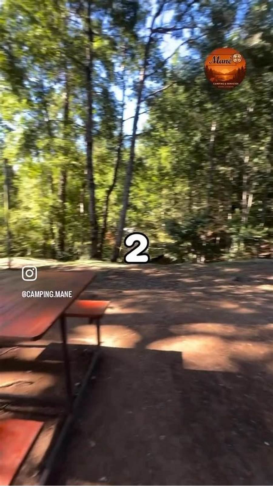
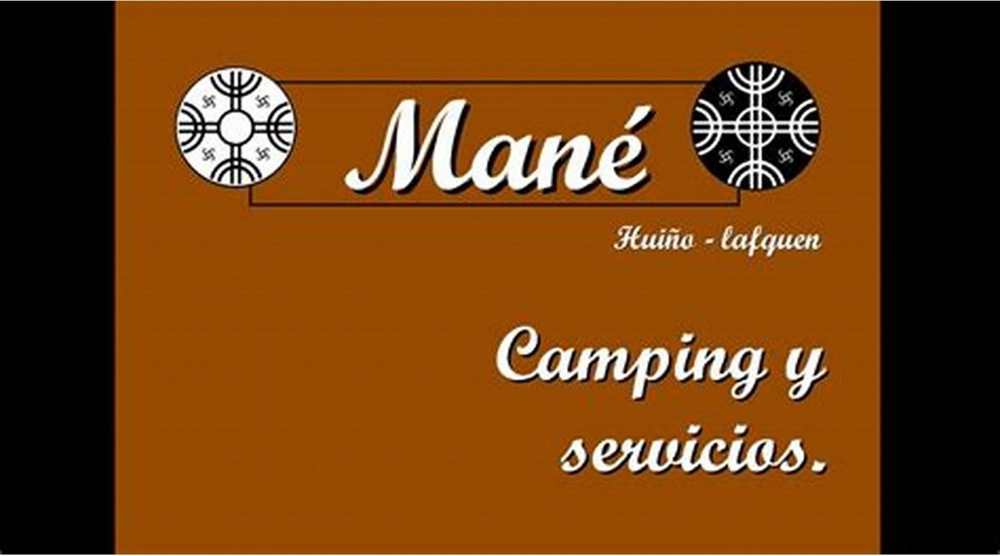
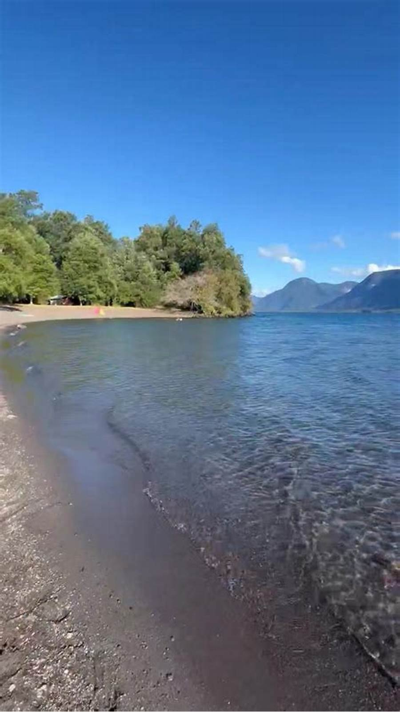
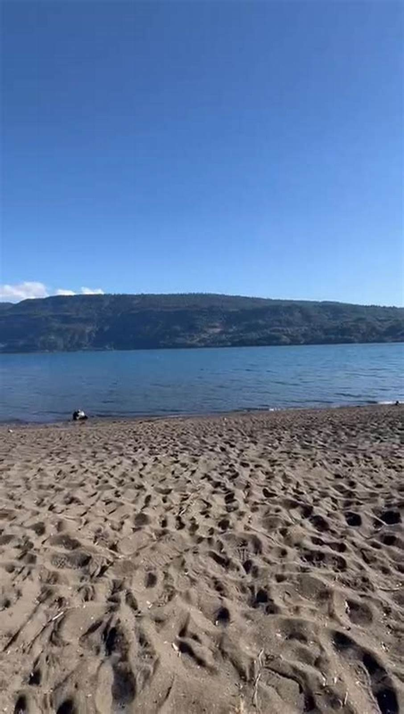
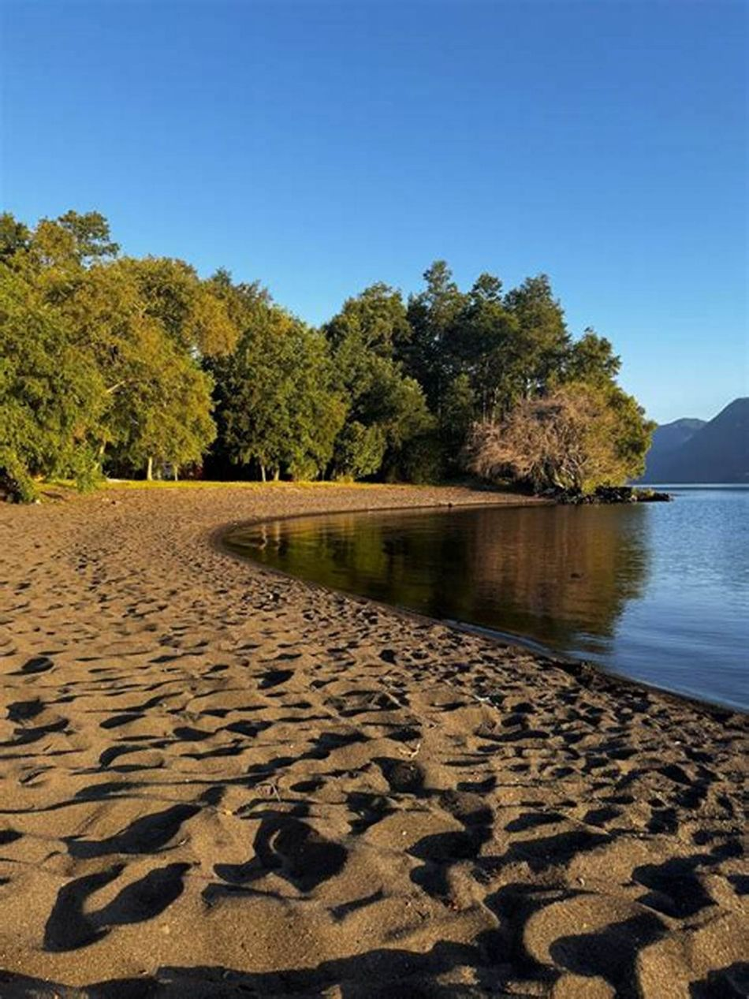
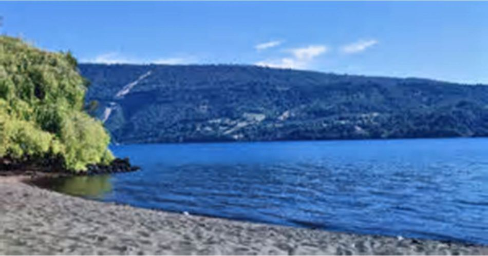
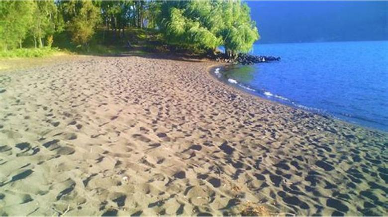
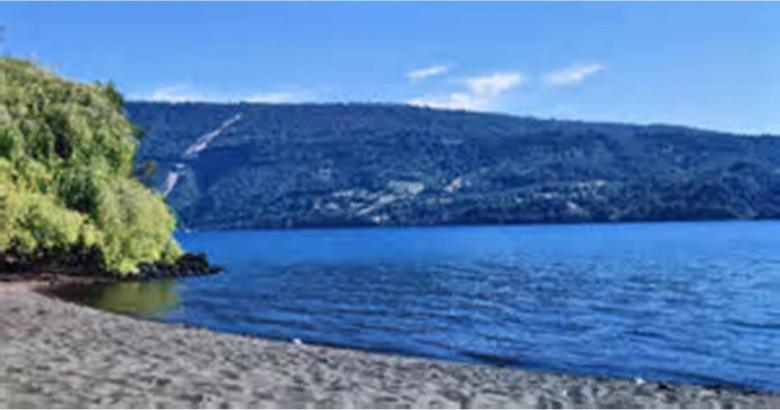
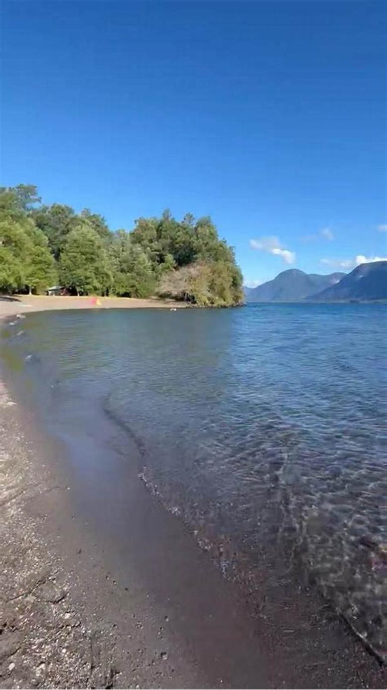

A
Junto al río
La zona que todos piden. También la más fresca de noche y la que más ruido de agua tiene, que a unos les encanta y a otros no los deja dormir.
- Cuántos sitios
- falta
- Sombra
- falta
- Distancia a los baños
- falta
- Se puede llegar en auto
- falta
Propuesta de sitio web — preparada para Camping Mane por CristalWeb
125 reseñas en Coñaripe. La pregunta que ningún camping de la zona contesta por escrito: cuál sitio me va a tocar.
Camping · Coñaripe
Todos los campings dicen «tenemos sitios con sombra». Ninguno dice cuál le toca a usted. Esa incertidumbre es la razón por la que una familia llega tensa y se va con una reseña de tres estrellas.
La pregunta que nadie contesta
Un plano con los sitios numerados cambia la conversación entera: se deja de vender «un lugar donde poner la carpa» y se pasa a vender el sitio 7, el de la sombra grande. El que reserva sabe qué recibe y el que atiende deja de improvisar.
A
La zona que todos piden. También la más fresca de noche y la que más ruido de agua tiene, que a unos les encanta y a otros no los deja dormir.
B
La sombra de verdad, que en enero es lo único que importa. Suele ser la zona que se llena primero y la que conviene reservar con nombre y número.
C
La que nadie pide y la que más conviene a quien viene con niños chicos o con alguien mayor. Decir en voz alta que existe —y por qué sirve— la convierte de sobra en ventaja.
Cómo se hace el plano de verdad. No hace falta un topógrafo: una foto desde arriba, un dibujo a mano alzada sobre una hoja, o incluso una captura de satélite con los sitios marcados a mano sirven. Lo que importa es que cada sitio tenga un número y que ese número se pueda pedir por teléfono.

La foto que nadie publica
Quien reserva un camping no compra «naturaleza»: compra un pedazo de tierra concreto, con su sombra, su mesa y su distancia al baño. Publicar cada sitio numerado con su foto —cuál tiene sombra de tarde, cuál queda más cerca del agua, cuál aguanta una carpa grande— contesta la mitad de los WhatsApp de diciembre y hace que el que llega no discuta el que le tocó.
Lo que decide si la familia vuelve
Un camping se arruina de una sola forma: el grupo del sitio de al lado. Y se salva de una sola forma: reglas escritas antes de llegar. No sirven para castigar a nadie — sirven para que el que va a poner música fuerte no reserve acá, y el que quiere dormir sí.
Estas reglas no las invento: son las seis que se preguntan siempre. Escritas en la página, dejan de ser una conversación incómoda en la entrada y pasan a ser parte de lo que el cliente ya aceptó al reservar.
El cielo también es parte del terreno
Y en Coñaripe, en enero, se ve entero
Para reservar sitio, hoy se llama
Es el número publicado en su ficha de Google. Con el plano en la página, esa llamada pasa de «¿tienen sitio?» a «quiero el 7».
Las cuatro con pie son suyas, de su Facebook. Los fondos de bosque y cielo estrellado no lo son y están declarados en imagenes/FUENTES.txt. El logo se rescató de su propia gráfica de temporada.



falta: cada sitio numerado con su foto, y la playa al atardecer


Estas seis ya aparecen más arriba en la página. Vuelven acá en otro tamaño porque una sola pasada de imágenes deja el scroll vacío, y porque de cerca se ven cosas que en grande se pierden. La procedencia de cada una está en imagenes/FUENTES.txt.



Las 125 reseñas de su ficha de Google y el teléfono +56 9 4090 3330. No tienen página propia.
El plano entero. No conozco la distribución real del camping, así que dibujé un esquema para mostrar cómo se ve la idea. Está marcado como ejemplo en tres lugares distintos a propósito.
El plano real con los sitios numerados y las seis reglas. Con el plano solo, ustedes pasan a ser el único camping de la vuelta al lago donde se puede reservar un sitio con nombre.